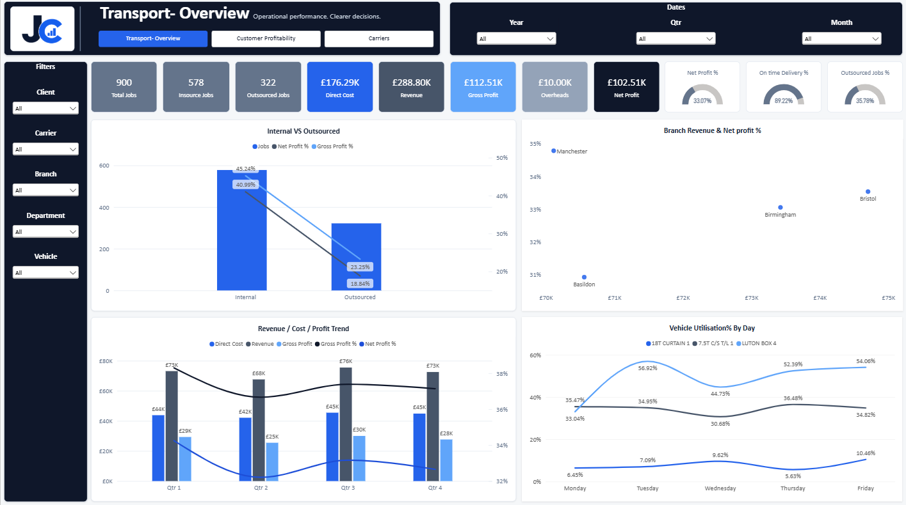
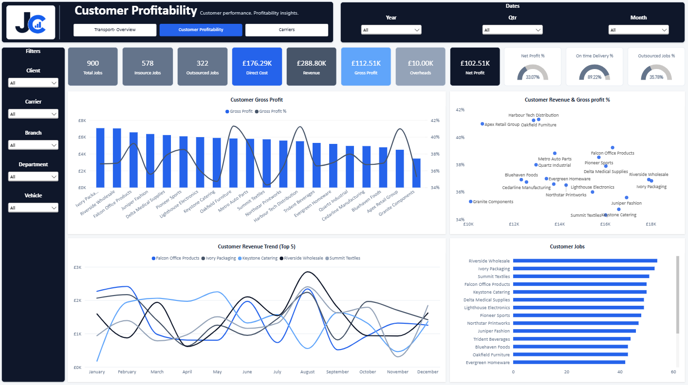
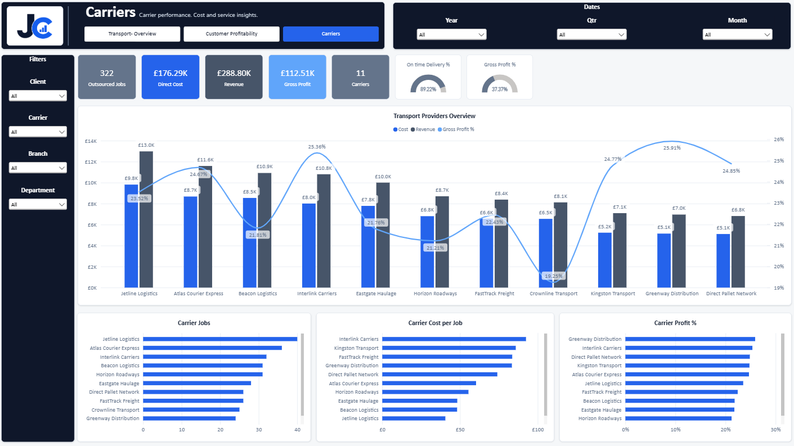
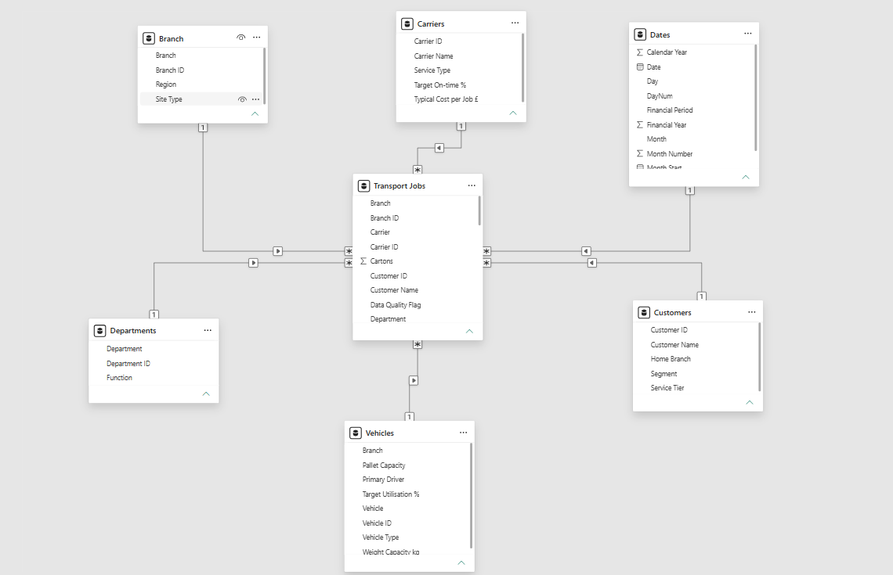

Problem
Transport was making a loss, while limited visibility of costs, vehicle utilisation and carrier performance made it difficult to understand where improvements could be made.
Improving transport profitability through better visibility of costs, carrier performance and vehicle utilisation
Transport was making a loss, while limited visibility of costs, vehicle utilisation and carrier performance made it difficult to understand where improvements could be made.
I developed a Power BI report covering transport profitability, vehicle utilisation, carrier performance and customer analysis. This gave management clearer information to support operational and financial decisions.
Three months after the report was introduced, transport recorded its first profitable month after previously making a loss.
Transport had been making a loss, but the business did not have a clear view of the factors affecting its performance.
Internal vehicles were believed to be full, so additional work was being outsourced. There was no clear view of whether vehicles were actually fully utilised or the gross profit benefit of completing suitable jobs internally.
The business also needed to understand which carriers offered the best balance of gross profit and service when outsourcing was required, and which customers produced the strongest return.
Some overhead costs were also being allocated to transport even though transport was provided as an additional service alongside warehousing. This affected how the transport profit and loss was represented and influenced how competitively the service could be priced.
The reporting needed to bring profitability, vehicle utilisation, carrier performance and customer analysis together so management could understand where changes could be made.
I developed a Power BI report combining transport activity, vehicle capacity, internal and outsourced jobs, revenue, cost, gross profit and on-time delivery. It provides an overview alongside focused customer and carrier analysis.
The report helped identify opportunities to maximise the use of internal vehicles and gave management the information needed to make better decisions when using external carriers.
It also highlighted how overhead costs were being attributed. Following review by management, some overheads were allocated to warehousing rather than transport, creating a fairer representation of the transport profit and loss and allowing the service to be priced more competitively.
I worked with Transport and management to make sure operational processes were reflected correctly in the report and that the data used was accurate and reliable.

In the test-data version, 578 jobs are internal and 322 are outsourced. Internal Gross Profit % is 45.24% compared with 23.25% for outsourced work, while overall on-time delivery is 89.22%. The utilisation data also shows that internal vehicles are not being fully utilised, despite work being outsourced.
These figures answer the management questions: Are internal vehicles genuinely full? Is suitable work being outsourced when capacity is available? What is the gross profit benefit of completing work internally? Is service being maintained?
Job Utilisation % =
DIVIDE(
'Transport Jobs'[Weight kg],
RELATED(Vehicles[Weight Capacity kg]))Calculating the load against vehicle capacity made available space visible and showed where suitable jobs could be planned internally.

In the test data, Oakfield Furniture has the highest displayed Gross Profit % at around 41% despite lower job volume. This helps identify customers where opening a conversation about doing more suitable work could create a stronger return.

In the test data, Greenway Distribution has the highest displayed Gross Profit % at 25.91% while receiving fewer jobs than several other carriers.
The useful question is: Should Greenway be contacted first for more suitable outsourced work, provided its service, route coverage and availability also fit?
This gives management the information needed to make better carrier decisions rather than relying on cost or usage alone.

The data model uses a star schema, with Transport Jobs as the central fact table linked to dimension tables for Customers, Carriers, Vehicles, Branches, Departments and Dates.
Transport recorded its first profitable month three months after the report was introduced.
Before the report was implemented, transport had been making a loss. The reporting gave management clearer visibility of costs, profitability and vehicle utilisation, helping support the decisions that contributed to the improvement.
Internal vehicles were used more efficiently.
The report made vehicle utilisation more visible and helped keep the focus on maximising internal vehicle use wherever possible, allowing more suitable work to be completed internally.
Management had better information for carrier decisions.
Carrier performance and profitability could be compared more clearly, helping management make better-informed decisions when external carriers were required.
Cost allocation provided a fairer view of transport performance.
The review of overhead allocation created a more accurate view of the transport profit and loss and supported more competitive pricing.
Power BI · DAX · Data Modelling · Star Schema · Transport Reporting · Vehicle Utilisation · Profitability Analysis · Customer Analysis · Carrier Analysis · Data Quality